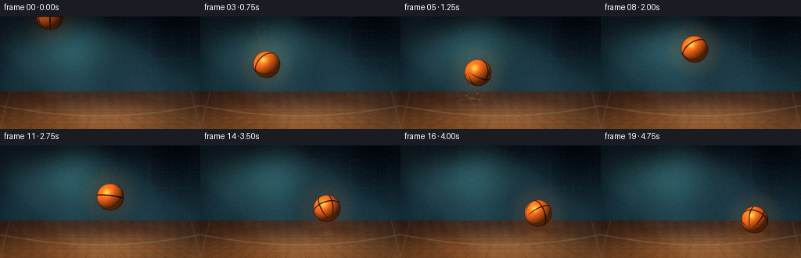
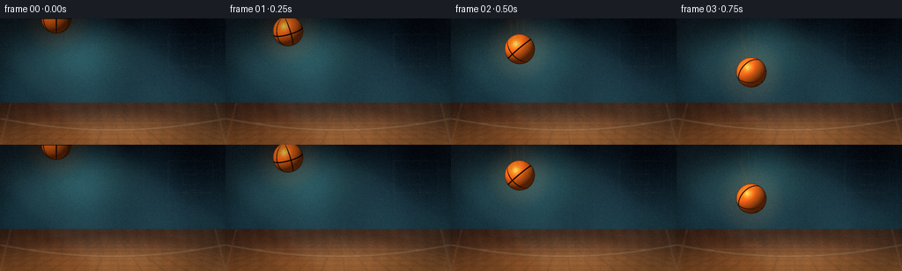
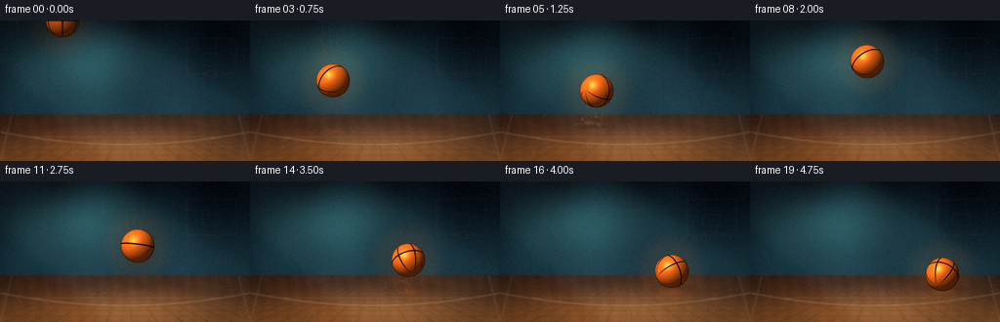

CODING AGENTS AS PIXEL WORLD MODELS
traex/DeepSeek-V4.1-Flash · phygen_027
点击播放 · 原生 RGB 像素
逐轮保存的候选
回放视频、检查图与代码变化。
每份候选均可单独播放。实际图片检查记录在下方工具轨迹中。
候选 01播放与检查图
点击播放 · 原生 RGB 像素

展开代码变化
--- 上一保存版本
+++ 本次保存版本
@@ -0,0 +1,455 @@
+"""Procedural RGB video: a forcefully thrown basketball hits a court floor."""
+
+from __future__ import annotations
+
+import math
+from pathlib import Path
+
+import numpy as np
+from PIL import Image, ImageDraw, ImageFilter
+
+import artifact_io
+
+
+WIDTH = 256
+HEIGHT = 144
+FRAMES = 20
+FPS = 4.0
+SCALE = 4
+H = HEIGHT * SCALE
+W = WIDTH * SCALE
+HORIZON = 96 * SCALE
+FLOOR_Y = 109.0
+BALL_R = 17.2
+IMPACT_1 = 1.0
+IMPACT_2 = 3.083333
+IMPACT_3 = 4.166667
+
+
+def _smoothstep(edge0: float, edge1: float, value: np.ndarray | float):
+ t = np.clip((value - edge0) / (edge1 - edge0), 0.0, 1.0)
+ return t * t * (3.0 - 2.0 * t)
+
+
+def _mix(a: np.ndarray, b: np.ndarray, t: np.ndarray | float):
+ return a + (b - a) * t
+
+
+def _trajectory(t: float) -> tuple[float, float, float, float]:
+ """Return center x/y, vertical velocity, and impact squash amount."""
+ x = 64.0 + 28.0 * t
+ if t < IMPACT_1:
+ y = 46.0 * t + 48.0 * t * t
+ vy = 46.0 + 96.0 * t
+ elif t < IMPACT_2:
+ tau = t - IMPACT_1
+ y = 94.0 - 100.0 * tau + 48.0 * tau * tau
+ vy = -100.0 + 96.0 * tau
+ elif t < IMPACT_3:
+ tau = t - IMPACT_2
+ y = 94.0 - 52.0 * tau + 48.0 * tau * tau
+ vy = -52.0 + 96.0 * tau
+ else:
+ tau = t - IMPACT_3
+ y = 94.0 - 26.0 * tau + 48.0 * tau * tau
+ vy = -26.0 + 96.0 * tau
+
+ squash = 0.0
+ for impact_t, strength in (
+ (IMPACT_1, 1.0),
+ (IMPACT_2, 0.58),
+ (IMPACT_3, 0.28),
+ ):
+ squash = max(squash, strength * math.exp(-((t - impact_t) / 0.115) ** 2))
+ return x, y, vy, squash
+
+
+def _make_background() -> Image.Image:
+ yy, xx = np.mgrid[0:H, 0:W].astype(np.float32)
+ xn = xx / max(W - 1, 1)
+ yn = yy / max(H - 1, 1)
+
+ wall_t = _smoothstep(0.0, 1.0, yy / HORIZON)
+ wall_top = np.array([7.0, 14.0, 23.0], dtype=np.float32)
+ wall_bottom = np.array([24.0, 52.0, 64.0], dtype=np.float32)
+ wall = _mix(wall_top[None, None, :], wall_bottom[None, None, :], wall_t[..., None])
+
+ glow_x = 0.35 * W
+ glow_y = 0.40 * HORIZON
+ glow_d = ((xx - glow_x) / (0.34 * W)) ** 2 + ((yy - glow_y) / (0.48 * HORIZON)) ** 2
+ wall_glow = np.exp(-1.8 * glow_d)[..., None]
+ wall += wall_glow * np.array([25.0, 52.0, 50.0], dtype=np.float32)
+
+ panel = 0.5 + 0.5 * np.sin(xx / (13.0 * SCALE) + 0.35)
+ wall += (panel[..., None] - 0.5) * np.array([3.0, 7.0, 8.0], dtype=np.float32)
+
+ floor_t = _smoothstep(0.0, 1.0, (yy - HORIZON) / (H - HORIZON))
+ floor_top = np.array([62.0, 36.0, 25.0], dtype=np.float32)
+ floor_bottom = np.array([166.0, 98.0, 48.0], dtype=np.float32)
+ floor = _mix(floor_top[None, None, :], floor_bottom[None, None, :], floor_t[..., None])
+
+ grain = (
+ 0.55
+ + 0.22 * np.sin(xx / (2.3 * SCALE) + 0.7 * np.sin(yy / (11.0 * SCALE)))
+ + 0.12 * np.sin(xx / (7.0 * SCALE) - yy / (5.0 * SCALE))
+ )
+ floor += (grain[..., None] - 0.55) * np.array([14.0, 8.0, 4.0], dtype=np.float32)
+
+ floor_glow = np.exp(
+ -(((xx - 0.56 * W) / (0.36 * W)) ** 2 + ((yy - 0.93 * H) / (0.25 * H)) ** 2) * 2.0
+ )
+ floor += floor_glow[..., None] * np.array([18.0, 11.0, 5.0], dtype=np.float32)
+
+ image = np.empty((H, W, 3), dtype=np.float32)
+ wall_mask = yy < HORIZON
+ image[wall_mask] = wall[wall_mask]
+ image[~wall_mask] = floor[~wall_mask]
+ image = np.clip(image, 0, 255).astype(np.uint8)
+ base = Image.fromarray(image, "RGB").convert("RGBA")
+
+ detail = Image.new("RGBA", (W, H), (0, 0, 0, 0))
+ draw = ImageDraw.Draw(detail)
+
+ # Soft architectural light shafts falling from the upper left.
+ for x0, width, alpha in ((-60, 160, 16), (30, 100, 12), (245, 210, 10)):
+ polygon = [
+ ((x0 + 10) * SCALE, 0),
+ ((x0 + width) * SCALE, 0),
+ ((x0 + width + 210) * SCALE, H),
+ ((x0 + 160) * SCALE, H),
+ ]
+ draw.polygon(polygon, fill=(132, 204, 204, alpha))
+ detail = detail.filter(ImageFilter.GaussianBlur(8 * SCALE))
+ base = Image.alpha_composite(base, detail)
+
+ detail = Image.new("RGBA", (W, H), (0, 0, 0, 0))
+ draw = ImageDraw.Draw(detail)
+
+ # Faint wall panels.
+ for x in range(18, WIDTH, 29):
+ draw.line([(x * SCALE, 0), (x * SCALE, HORIZON)], fill=(190, 225, 220, 12), width=1 * SCALE)
+ draw.line([(0, 29 * SCALE), (W, 29 * SCALE)], fill=(210, 235, 225, 10), width=1 * SCALE)
+
+ # Perspective floor boards.
+ vanishing = (128 * SCALE, HORIZON)
+ for x in range(-8, 18):
+ bottom_x = (x * 26 + 5) * SCALE
+ draw.line([vanishing, (bottom_x, H)], fill=(45, 24, 13, 44), width=max(1, SCALE))
+ for j in range(1, 12):
+ f = (j / 12.0) ** 1.55
+ y = HORIZON + int((H - HORIZON) * f)
+ draw.line([(0, y), (W, y)], fill=(54, 29, 15, 34), width=max(1, SCALE))
+
+ # Court markings receding toward the floor.
+ line_points = []
+ for x in np.linspace(0, W, 80):
+ nx = x / W
+ y = HORIZON + (31.0 - 13.0 * (1.0 - 2.0 * nx) ** 2) * SCALE
+ line_points.append((float(x), float(y)))
+ draw.line(line_points, fill=(242, 221, 177, 74), width=2 * SCALE, joint="curve")
+ draw.line(
+ [(33 * SCALE, 119 * SCALE), (223 * SCALE, 119 * SCALE)],
+ fill=(238, 219, 181, 38),
+ width=1 * SCALE,
+ )
+ draw.line([(12 * SCALE, HORIZON), (0, H)], fill=(242, 222, 182, 30), width=2 * SCALE)
+ draw.line([(244 * SCALE, HORIZON), (W, H)], fill=(242, 222, 182, 30), width=2 * SCALE)
+
+ # A distant, soft backboard and rim keep the surface readable as a court.
+ draw.rounded_rectangle(
+ [190 * SCALE, 18 * SCALE, 242 * SCALE, 55 * SCALE],
+ radius=2 * SCALE,
+ outline=(211, 231, 221, 24),
+ width=1 * SCALE,
+ )
+ draw.rectangle(
+ [207 * SCALE, 33 * SCALE, 225 * SCALE, 46 * SCALE],
+ outline=(230, 237, 217, 20),
+ width=1 * SCALE,
+ )
+ draw.ellipse(
+ [208 * SCALE, 51 * SCALE, 230 * SCALE, 58 * SCALE],
+ outline=(241, 113, 45, 32),
+ width=1 * SCALE,
+ )
+
+ detail = detail.filter(ImageFilter.GaussianBlur(0.7 * SCALE))
+ base = Image.alpha_composite(base, detail)
+ return base.convert("RGB")
+
+
+def _render_ball(cx: float, cy: float, rx: float, ry: float, spin: float) -> Image.Image:
+ yy, xx = np.mgrid[0:H, 0:W].astype(np.float32)
+ px = (xx + 0.5) / SCALE
+ py = (yy + 0.5) / SCALE
+
+ u = (px - cx) / rx
+ v = (py - cy) / ry
+ rr = u * u + v * v
+ inside = rr <= 1.0
+ z = np.sqrt(np.clip(1.0 - rr, 0.0, 1.0))
+
+ nx = u
+ ny = v
+ nz = z
+
+ # Rotate the surface coordinates so the seams turn with the throw.
+ a = spin
+ b = 0.42 * spin
+ x1 = nx * math.cos(a) + nz * math.sin(a)
+ z1 = -nx * math.sin(a) + nz * math.cos(a)
+ y1 = ny
+ y2 = y1 * math.cos(b) - z1 * math.sin(b)
+ z2 = y1 * math.sin(b) + z1 * math.cos(b)
+ x2 = x1
+
+ light = np.array([-0.44, -0.61, 0.66], dtype=np.float32)
+ light /= np.linalg.norm(light)
+ diffuse = np.clip(nx * light[0] + ny * light[1] + nz * light[2], 0.0, 1.0)
+ rim = np.clip(-0.62 * nx - 0.18 * ny + 0.55 * nz, 0.0, 1.0) ** 2.2
+
+ half = light + np.array([0.0, 0.0, 1.0], dtype=np.float32)
+ half /= np.linalg.norm(half)
+ specular = np.clip(nx * half[0] + ny * half[1] + nz * half[2], 0.0, 1.0) ** 28
+
+ base = np.array([244.0, 105.0, 24.0], dtype=np.float32)
+ shade = 0.30 + 0.88 * diffuse
+ rgb = base[None, None, :] * shade[..., None]
+ rgb += specular[..., None] * np.array([120.0, 96.0, 55.0], dtype=np.float32)
+ rgb += rim[..., None] * np.array([38.0, 12.0, 4.0], dtype=np.float32)
+
+ # Dark pebbled leather and a slightly warmer lower hemisphere.
+ pebble = (
+ np.sin(px * 5.7 + py * 3.1)
+ + 0.65 * np.sin(px * 11.3 - py * 7.7)
+ + 0.35 * np.sin(px * 19.1 + py * 15.3)
+ )
+ rgb *= (1.0 + 0.035 * pebble)[..., None]
+ lower_warmth = np.clip(ny, 0.0, 1.0) * 8.0
+ rgb += lower_warmth[..., None] * np.array([1.0, 0.25, 0.0], dtype=np.float32)
+
+ # Basketball seams: equator, center meridian, and two side meridians.
+ angle = np.arctan2(x2, z2)
+ angular = np.abs((angle + math.pi) % (2.0 * math.pi) - math.pi)
+ seam = angular < 0.043
+ seam |= np.abs(y2) < 0.043
+ seam |= np.abs(angular - 1.02) < 0.038
+ seam |= np.abs(angular - 1.02 - math.pi) < 0.038
+ seam |= np.abs(angular + 1.02) < 0.038
+ seam &= inside
+ rgb[seam] = rgb[seam] * 0.10 + np.array([8.0, 4.0, 2.0], dtype=np.float32)
+
+ edge = _smoothstep(0.86, 1.0, rr)
+ rgb *= (1.0 - 0.52 * edge)[..., None]
+ rgb = np.clip(rgb, 0, 255).astype(np.uint8)
+
+ alpha = (inside.astype(np.float32) * 255.0).astype(np.uint8)
+ rgba = np.dstack([rgb, alpha])
+ return Image.fromarray(rgba, "RGBA")
+
+
+def _draw_shadow_and_reflection(
+ frame: Image.Image, cx: float, cy: float, squash: float
+) -> Image.Image:
+ height_above = max(0.0, FLOOR_Y - cy)
+ shadow_w = BALL_R * (1.18 - 0.0045 * height_above) * (1.0 + 0.22 * squash)
+ shadow_h = 5.0 * (1.0 - 0.005 * height_above)
+ opacity = int(np.clip(92 - 1.25 * height_above, 18, 92))
+
+ overlay = Image.new("RGBA", (W, H), (0, 0, 0, 0))
+ draw = ImageDraw.Draw(overlay)
+ for k in range(4, 0, -1):
+ grow = k * 1.7 * SCALE
+ alpha = int(opacity * (0.13 + 0.10 * (4 - k)))
+ draw.ellipse(
+ [
+ (cx - shadow_w) * SCALE - grow,
+ (FLOOR_Y + 1.5) * SCALE - shadow_h * SCALE - grow * 0.28,
+ (cx + shadow_w) * SCALE + grow,
+ (FLOOR_Y + 1.5) * SCALE + shadow_h * SCALE + grow * 0.28,
+ ],
+ fill=(10, 5, 2, alpha),
+ )
+
+ # A restrained warm reflection on the polished floor.
+ refl_alpha = int(np.clip(36 - 0.32 * height_above, 8, 36))
+ draw.ellipse(
+ [
+ (cx - 0.70 * BALL_R) * SCALE,
+ (FLOOR_Y + 2.0) * SCALE,
+ (cx + 0.70 * BALL_R) * SCALE,
+ (FLOOR_Y + 8.0) * SCALE,
+ ],
+ fill=(244, 104, 27, refl_alpha),
+ )
+ overlay = overlay.filter(ImageFilter.GaussianBlur(2.0 * SCALE))
+ return Image.alpha_composite(frame.convert("RGBA"), overlay)
+
+
+def _draw_trail(frame: Image.Image, t: float) -> Image.Image:
+ overlay = Image.new("RGBA", (W, H), (0, 0, 0, 0))
+ draw = ImageDraw.Draw(overlay)
+ start = max(0.0, t - 0.52)
+ points = []
+ for i in range(14):
+ sample_t = start + (t - start) * i / 13.0
+ sx, sy, _, _ = _trajectory(sample_t)
+ points.append((sx * SCALE, sy * SCALE))
+ if len(points) > 1:
+ draw.line(points, fill=(255, 125, 35, 44), width=int(3.4 * SCALE), joint="curve")
+ for i in range(1, 7):
+ sample_t = max(0.0, t - 0.055 * i)
+ sx, sy, _, _ = _trajectory(sample_t)
+ radius = (3.6 - 0.35 * i) * SCALE
+ alpha = int(25 - 2.5 * i)
+ draw.ellipse(
+ [sx * SCALE - radius, sy * SCALE - radius, sx * SCALE + radius, sy * SCALE + radius],
+ fill=(255, 139, 43, max(alpha, 4)),
+ )
+ overlay = overlay.filter(ImageFilter.GaussianBlur(2.1 * SCALE))
+ return Image.alpha_composite(frame.convert("RGBA"), overlay)
+
+
+def _draw_impact_effects(frame: Image.Image, t: float) -> Image.Image:
+ overlay = Image.new("RGBA", (W, H), (0, 0, 0, 0))
+ draw = ImageDraw.Draw(overlay)
+ impacts = (
+ (IMPACT_1, 1.0, 0),
+ (IMPACT_2, 0.62, 1),
+ (IMPACT_3, 0.30, 2),
+ )
+ for impact_t, strength, seed in impacts:
+ age = t - impact_t
+ if age < 0.0 or age > 0.72:
+ continue
+ fade = max(0.0, 1.0 - age / 0.72) * strength
+ impact_x, _, _, _ = _trajectory(impact_t)
+ ring_w = (8.0 + 54.0 * age) * SCALE
+ ring_h = (2.2 + 9.0 * age) * SCALE
+ draw.ellipse(
+ [
+ impact_x * SCALE - ring_w,
+ FLOOR_Y * SCALE - ring_h,
+ impact_x * SCALE + ring_w,
+ FLOOR_Y * SCALE + ring_h,
+ ],
+ outline=(242, 204, 139, int(78 * fade)),
+ width=max(1, int((1.7 - age) * SCALE)),
+ )
+
+ rng = np.random.default_rng(1701 + seed * 41)
+ for _ in range(22):
+ angle = rng.uniform(-math.pi + 0.28, -0.28)
+ speed = rng.uniform(18.0, 62.0) * strength
+ px = impact_x + math.cos(angle) * speed * age
+ py = FLOOR_Y + math.sin(angle) * speed * age + 33.0 * age * age
+ radius = rng.uniform(0.8, 2.2) * SCALE * (1.0 - 0.45 * age)
+ alpha = int(rng.uniform(35, 100) * fade)
+ color = (rng.integers(190, 255), rng.integers(145, 215), rng.integers(100, 165), alpha)
+ draw.ellipse(
+ [px * SCALE - radius, py * SCALE - radius, px * SCALE + radius, py * SCALE + radius],
+ fill=color,
+ )
+
+ if age < 0.16:
+ flash = (1.0 - age / 0.16) * strength
+ radius = (10.0 + 24.0 * age / 0.16) * SCALE
+ draw.ellipse(
+ [
+ impact_x * SCALE - radius,
+ FLOOR_Y * SCALE - radius * 0.30,
+ impact_x * SCALE + radius,
+ FLOOR_Y * SCALE + radius * 0.30,
+ ],
+ fill=(255, 224, 167, int(65 * flash)),
+ )
+ overlay = overlay.filter(ImageFilter.GaussianBlur(0.7 * SCALE))
+ return Image.alpha_composite(frame.convert("RGBA"), overlay)
+
+
+def _finish_frame(frame: Image.Image, frame_index: int) -> np.ndarray:
+ yy, xx = np.mgrid[0:H, 0:W].astype(np.float32)
+ nx = (xx - W * 0.5) / (W * 0.5)
+ ny = (yy - H * 0.5) / (H * 0.5)
+ radius = np.sqrt(nx * nx + ny * ny)
+ vignette = 1.0 - 0.35 * _smoothstep(0.62, 1.30, radius)
+
+ rgb = np.asarray(frame.convert("RGB"), dtype=np.float32) * vignette[..., None]
+ rng = np.random.default_rng(9100 + frame_index)
+ grain = rng.normal(0.0, 2.0, (HEIGHT, WIDTH, 1)).astype(np.float32)
+ small = Image.fromarray(np.clip(rgb, 0, 255).astype(np.uint8), "RGB").resize(
+ (WIDTH, HEIGHT), Image.Resampling.LANCZOS
+ )
+ arr = np.asarray(small, dtype=np.float32)
+ arr = np.clip(arr + grain, 0, 255).astype(np.uint8)
+ return arr
+
+
+def render_frame(t: float, frame_index: int, background: Image.Image) -> np.ndarray:
+ cx, cy, vy, squash = _trajectory(t)
+ rx = BALL_R * (1.0 + 0.34 * squash)
+ ry = BALL_R * (1.0 - 0.31 * squash)
+ if squash > 0.02 and cy > FLOOR_Y - ry - 2.5:
+ cy = FLOOR_Y - ry
+
+ frame = background.convert("RGBA")
+ frame = _draw_shadow_and_reflection(frame, cx, cy, squash)
+ frame = _draw_trail(frame, t)
+ frame = _draw_impact_effects(frame, t)
+
+ # A soft orange halo separates the ball from the dark gym.
+ halo = Image.new("RGBA", (W, H), (0, 0, 0, 0))
+ hdraw = ImageDraw.Draw(halo)
+ hradius = BALL_R * 2.15
+ hdraw.ellipse(
+ [
+ (cx - hradius) * SCALE,
+ (cy - hradius) * SCALE,
+ (cx + hradius) * SCALE,
+ (cy + hradius) * SCALE,
+ ],
+ fill=(255, 114, 28, 20),
+ )
+ halo = halo.filter(ImageFilter.GaussianBlur(7.0 * SCALE))
+ frame = Image.alpha_composite(frame, halo)
+
+ spin = 2.7 * t + 0.5 * math.sin(1.4 * t)
+ ball = _render_ball(cx, cy, rx, ry, spin)
+ frame = Image.alpha_composite(frame, ball)
+
+ # A few crisp speed streaks around the moving ball.
+ streaks = Image.new("RGBA", (W, H), (0, 0, 0, 0))
+ sdraw = ImageDraw.Draw(streaks)
+ speed = abs(vy)
+ if speed > 42.0:
+ direction = -1.0 if vy > 0 else 1.0
+ for k in range(3):
+ ox = (-0.55 + 0.45 * k) * BALL_R
+ oy = (-0.40 + 0.38 * k) * BALL_R
+ length = min(20.0, 0.12 * speed) * SCALE
+ sdraw.line(
+ [
+ ((cx + ox) * SCALE, (cy + oy) * SCALE),
+ ((cx + ox - 0.10 * BALL_R) * SCALE, (cy + oy + direction * length) * SCALE),
+ ],
+ fill=(255, 197, 126, 42),
+ width=max(1, SCALE),
+ )
+ streaks = streaks.filter(ImageFilter.GaussianBlur(0.6 * SCALE))
+ frame = Image.alpha_composite(frame, streaks)
+ return _finish_frame(frame, frame_index)
+
+
+def main() -> None:
+ case_dir = Path(__file__).resolve().parent
+ background = _make_background()
+ frames = np.stack(
+ [render_frame(i / FPS, i, background) for i in range(FRAMES)],
+ axis=0,
+ ).astype(np.uint8)
+ artifact_io.save(frames, case_dir)
+ print(f"saved {frames.shape} RGB frames to {case_dir}")
+
+
+if __name__ == "__main__":
+ main()
候选 02播放与检查图
点击播放 · 原生 RGB 像素


展开代码变化
--- 上一保存版本
+++ 本次保存版本
@@ -105,7 +105,7 @@
image[wall_mask] = wall[wall_mask]
image[~wall_mask] = floor[~wall_mask]
image = np.clip(image, 0, 255).astype(np.uint8)
- base = Image.fromarray(image, "RGB").convert("RGBA")
+ base = Image.fromarray(image).convert("RGBA")
detail = Image.new("RGBA", (W, H), (0, 0, 0, 0))
draw = ImageDraw.Draw(detail)
@@ -245,7 +245,7 @@
alpha = (inside.astype(np.float32) * 255.0).astype(np.uint8)
rgba = np.dstack([rgb, alpha])
- return Image.fromarray(rgba, "RGBA")
+ return Image.fromarray(rgba)
def _draw_shadow_and_reflection(
@@ -377,7 +377,7 @@
rgb = np.asarray(frame.convert("RGB"), dtype=np.float32) * vignette[..., None]
rng = np.random.default_rng(9100 + frame_index)
grain = rng.normal(0.0, 2.0, (HEIGHT, WIDTH, 1)).astype(np.float32)
- small = Image.fromarray(np.clip(rgb, 0, 255).astype(np.uint8), "RGB").resize(
+ small = Image.fromarray(np.clip(rgb, 0, 255).astype(np.uint8)).resize(
(WIDTH, HEIGHT), Image.Resampling.LANCZOS
)
arr = np.asarray(small, dtype=np.float32)
@@ -389,7 +389,7 @@
cx, cy, vy, squash = _trajectory(t)
rx = BALL_R * (1.0 + 0.34 * squash)
ry = BALL_R * (1.0 - 0.31 * squash)
- if squash > 0.02 and cy > FLOOR_Y - ry - 2.5:
+ if squash > 0.02:
cy = FLOOR_Y - ry
frame = background.convert("RGBA")
候选 03播放与检查图
点击播放 · 原生 RGB 像素

展开代码变化
代码未变化；重新保存了产物。
候选 04播放与检查图
点击播放 · 原生 RGB 像素

展开代码变化
代码未变化；重新保存了产物。
候选 05播放与检查图
点击播放 · 原生 RGB 像素

展开代码变化
--- 上一保存版本
+++ 本次保存版本
@@ -39,8 +39,8 @@
"""Return center x/y, vertical velocity, and impact squash amount."""
x = 64.0 + 28.0 * t
if t < IMPACT_1:
- y = 46.0 * t + 48.0 * t * t
- vy = 46.0 + 96.0 * t
+ y = 22.0 + 36.0 * t + 36.0 * t * t
+ vy = 36.0 + 72.0 * t
elif t < IMPACT_2:
tau = t - IMPACT_1
y = 94.0 - 100.0 * tau + 48.0 * tau * tau
候选 06播放与检查图
可观测工具轨迹
实际执行的命令与返回图片。
命令 1exit 0
/bin/bash -c "pwd && rg --files -g 'GENERATION_RULES.md' -g 'prompt.txt' -g 'task_spec.json' -g '"'!node_modules'"' -g '"'!vendor'"'"
命令 2exit 0
/bin/bash -c 'ls -la && find . -maxdepth 2 -type f | sort | head -200'
命令 3exit 0
/bin/bash -c 'cat GENERATION_RULES.md'
命令 4exit 0
/bin/bash -c 'cat task_spec.json'
命令 5exit 0
/bin/bash -c 'cat prompt.txt'
命令 6exit 0
/bin/bash -c "sed -n '1,240p' artifact_io.py"
命令 7exit 0
/bin/bash -c 'python generate.py'
命令 8exit 0
/bin/bash -c 'command -v chafa || true; command -v viu || true; command -v jp2 || true; command -v ffmpeg || true; du -h index.html pixels.npz inspection.png frames/00.png'
命令 9exit 0
/bin/bash -c "python - <<'PY'
from PIL import Image
import numpy as np
for f in (0,2,4,5,6,10,12,13,16,17,19):
a=np.asarray(Image.open(f'frames/{f:02d}.png').convert('RGB'))
print(f, 'mean', a.mean(axis=(0,1)).round(1), 'std', a.std().round(1), 'orange', ((a[:,:,0]>150)&(a[:,:,1]<150)&(a[:,:,2]<100)).sum())
PY"命令 10exit 0
/bin/bash -c "python - <<'PY'
from PIL import Image
import numpy as np
chars=' .:-=+*#%@'
for f in (0,4,8,12,16,19):
a=np.asarray(Image.open(f'frames/{f:02d}.png').convert('L').resize((64,36)))
print('\\nFRAME',f)
for row in a:
print(''.join(chars[min(len(chars)-1,int(v)*len(chars)//256)] for v in row))
PY"命令 11exit 0
/bin/bash -c 'python generate.py'
命令 12exit 0
/bin/bash -c 'python generate.py'
命令 13exit 0
/bin/bash -c "python - <<'PY'
import json
from pathlib import Path
import numpy as np
from PIL import Image
spec=json.loads(Path('task_spec.json').read_text())
z=np.load('pixels.npz')['pixels']
frames=np.stack([np.asarray(Image.open(f'frames/{i:02d}.png').convert('RGB')) for i in range(spec['frames'])])
assert z.shape==(spec['height'],spec['width'],spec['frames'])
assert frames.shape==(spec['frames'],spec['height'],spec['width'],3)
assert frames.dtype==np.uint8
assert all(Path(f'frames/{i:02d}.png').is_file() for i in range(spec['frames']))
assert Path('index.html').is_file() and Path('inspection.png').is_file()
changed=[np.count_nonzero(frames[i]"'!=frames[i-1]) for i in range(1,len(frames))]
print('"'pixels', z.shape, 'frames', frames.shape)
print('changed pixels/frame', changed)
print('brightness range', int(frames.min()), int(frames.max()), 'mean', round(float(frames.mean()),2))
print('all artifacts valid')
PY"保存候选 6 份；完成命令 13 次；可验证图片返回 0 张。原始 API 响应与完整日志保留在本地。